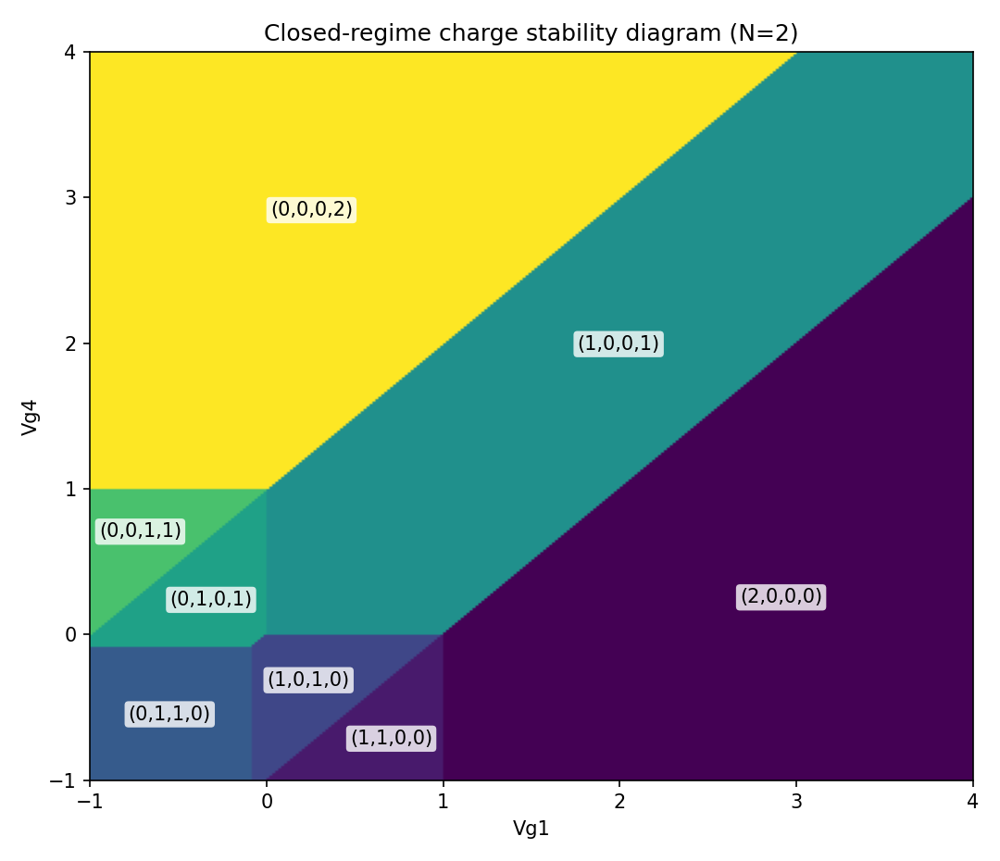
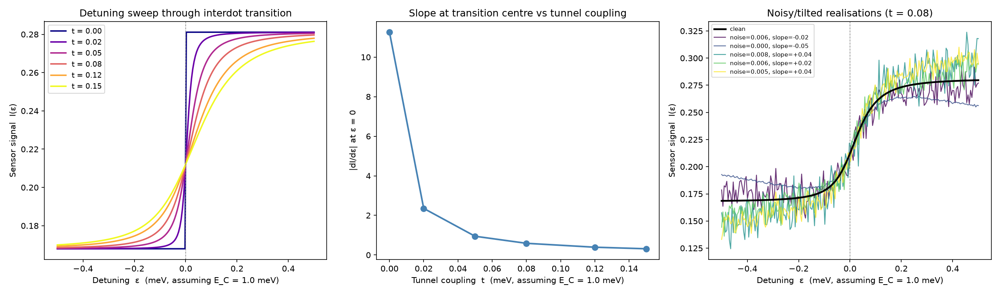
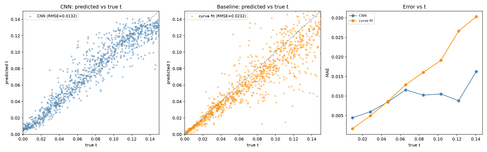

9th July 2026
This summer I've been working in the Oxford Quantum Device Lab, split between two connected pieces of work: extending QArray++, the lab's simulator for semiconductor quantum dot arrays, and training a convolutional neural network to read tunnel coupling directly off a device's charge-sensor signal. The two are more entangled than they sound: a faster, more physically complete simulator is what makes it possible to generate the realistic labelled data a model like this needs in the first place. This article walks through the underlying physics, how the simulator itself works and what I added to it, and how that fed into training a network that can infer a quantity you can't measure directly from the shape of a single trace.
A quantum dot array is a small number of electrostatic traps for individual electrons, tiny puddles carved out on a semiconductor chip by voltages on nearby metal gates. Each gate can be tuned to pull an electron onto its dot or push one off, and dots close enough together interact through their mutual capacitance. A charge stability diagram is what you get by sweeping two gate voltages and recording, at every point, how many electrons sit on each dot: a map of which whole-number configuration wins, with sharp lines marking every transition.
QArray++ predicts these diagrams using the constant-capacitance model, treating the dots and gates as a network of fixed capacitors, building on the original QArray simulator.[1] If \(\vec{Q}\) is the charge on each dot, \(\vec{V}_g\) the gate voltages, and \(c_{dd}\), \(c_{gd}\) the dot-dot and gate-dot capacitance matrices, the electrostatic free energy of a given charge configuration is (in practice \(c_{dd}\) and \(c_{gd}\) are normalised rather than tied to real Farads, only their ratios affect which configuration wins, so a dot's self-capacitance is simply set to 1 and everything else is expressed relative to it):
\[ F(\vec{Q}; \vec{V}_g) = \tfrac{1}{2}\vec{Q}^{\mathsf T} c_{dd}^{-1} \vec{Q} - \left(c_{dd}^{-1} c_{gd} \vec{V}_g\right)^{\mathsf T} \vec{Q} \]
The device settles into whichever integer charge configuration minimises this quantity, its ground state:
\[ \vec{N}^* = \operatorname*{arg\,min}_{\vec{N} \in \mathbb{Z}^n} F(\vec{N}; \vec{V}_g) \]
Sweep \(\vec{V}_g\) across a 2D grid, solve this at every pixel, and the boundaries where \(\vec{N}^*\) changes are the transition lines that show up in a charge stability diagram.
Solving that \(\arg\min\) exactly is not trivial: it is a mixed-integer quadratic program, NP-hard in general, and checking every possible charge configuration by brute force scales as \((n_{max}+1)^{n_{dots}}\), impossible for anything beyond a handful of dots. QArray's actual trick is to split the problem in two. First solve a continuous version of the same equation, dropping the requirement that charges be whole numbers. Then round that answer to a small handful of nearby integer candidates and check which one truly minimises the free energy. Because the free energy is convex, the true minimum is always one of these nearby integers, so the full space never has to be searched at all.
So far this has assumed the array is connected to a reservoir, a source it can freely pull charge from or push charge back into. Real devices can also be disconnected from that reservoir entirely, so the total number of charges on the array is fixed instead. This barely changes the maths: it just adds one extra constraint, \(\sum_i N_i = \hat{N}\), to the same \(\arg\min\). But it changes the physics completely. Charges can no longer come from outside, they can only move between dots, and a charge stability diagram looks entirely different as a result: instead of each dot filling up independently, you see the fixed pool of charge moving between dots as the gate voltages change.
Enforcing that one constraint turns out to have a closed-form answer. Without it, each dot would just settle at whatever charge its own gate voltage induces, call that \(\vec{V} = c_{gd}\vec{V}_g\), the ordinary open-regime answer. Appending a Lagrange multiplier term \(\lambda(\vec{1}^{\mathsf T}\vec{N} - \hat{N})\) to the free energy and setting its gradient to zero gives the constrained solution directly: the open-regime answer plus a correction. That correction is split across dots by \(c_{dd}\vec{1}\), the row-sums of the coupling matrix, which measure how strongly each dot is wired into the rest of the array:
\[ \vec{Q}^* = \vec{V} + \lambda \, c_{dd}\vec{1} \]
A more strongly-coupled dot absorbs a bigger share of that correction. \(\lambda\) itself is a single number, shared by every dot, fixed by demanding the result actually sums to \(\hat{N}\): how far the open-regime total misses the target, divided by how strongly the whole array is coupled together:
\[ \lambda^* = \frac{\hat{N} - \vec{1}^{\mathsf T}\vec{V}}{\vec{1}^{\mathsf T} c_{dd} \vec{1}} \]
Physically, each dot has its own potential, the quantity that decides whether adding one more electron there is favourable. In the open regime this always settles at exactly zero relative to the reservoir: charge stops flowing once a dot's potential matches the reservoir's, and that is the equilibrium condition. Once the reservoir is disconnected, nothing forces it to stay at zero any more, so it floats instead to whatever value \(\lambda^*\) is needed to hold exactly \(\hat{N}\) charges: a potential set by the array's own confinement rather than by an outside source.
QArray++ is written in JAX rather than plain NumPy. JAX code looks and behaves almost exactly like NumPy, but a function marked with @jax.jit gets compiled once into fast machine code instead of being reinterpreted line by line, and vmap lets a function written for a single gate-voltage point run across an entire swept grid at once, without writing a manual loop. That combination is a large part of what makes it possible to compute a full charge stability diagram, sometimes tens of thousands of individual ground-state solves, fast enough to be useful in real time.
Rather than solving for the closed-form \(\lambda^*\) directly, the actual code reaches the same answer by handing a slightly bigger version of the same problem to a numerical solver: one extra row is added to the existing constraint matrix, enforcing that the total charge equals the target exactly.
A = jnp.vstack([cdd, total_row[jnp.newaxis, :]])
l = jnp.concatenate([jnp.zeros(cdd.shape[0]), jnp.array([n_charge])])
u = jnp.concatenate([jnp.full(cdd.shape[0], jnp.inf), jnp.array([n_charge])])The extra row (built from total_row, the summed rows of the capacitance matrix) is squeezed between matching lower and upper bounds, n_charge, turning it into an exact equality rather than a range.
Here is what it actually produces on a four-dot array with the total pinned to two charges. Each coloured region is a different whole-number configuration, and every boundary is a point where two configurations become equally favourable and the ground state switches from one to the other.

A linear four-dot array with the total charge fixed at 2. Unlike an open-regime diagram, where each dot fills up independently, here the fixed pool of charge only ever moves between dots as the gate voltages sweep.
The maths above is purely electrostatic: whichever whole-number configuration has the lowest classical charging energy wins outright. Real devices have one more effect worth capturing: when two dots sit close enough together, an electron can tunnel between them, so instead of sitting definitively on one dot or the other it exists in a quantum superposition of both. The strength of that effect is the tunnel coupling \(t\), and it is the difference between a device that behaves like a set of classical charge states and one that behaves like an actual qubit.
Near an interdot transition only two configurations are ever competitive, say one electron on dot 1 versus one electron on dot 2, so the physics reduces to a simple two-level system. Detuning \(\varepsilon\) is just how far the two gate voltages are pushed away from the point where those two configurations cost exactly the same energy: at \(\varepsilon = 0\) they are perfectly balanced, and moving \(\varepsilon\) away from zero in either direction favours one configuration over the other. The diagonal of the Hamiltonian is just that electrostatic energy of each configuration, split symmetrically around zero, with the tunnel coupling added as the off-diagonal term connecting them:
\[ H = \begin{pmatrix} \varepsilon/2 & t \\ t & -\varepsilon/2 \end{pmatrix} \]
Without tunnel coupling, the energy of each configuration would simply cross at \(\varepsilon = 0\) and swap directly. With it, diagonalising \(H\) gives two energy levels that split apart instead:
\[ E_\pm(\varepsilon) = \pm\sqrt{(\varepsilon/2)^2 + t^2} \]
producing a gap of exactly \(2t\) at zero detuning. Instead of a sharp step where the ground state jumps discontinuously from one configuration to the other as detuning is swept, the charge measured by a nearby sensor traces out a smooth, rounded curve, an avoided crossing. The population difference between the two configurations follows:
\[ p(\varepsilon) = \frac{\varepsilon/2}{\sqrt{(\varepsilon/2)^2 + t^2}} \]
and its slope right at the middle of the crossing, \(\varepsilon = 0\), works out to exactly \(1/2t\), the same \(t\) that set the \(2t\) gap above: the larger the tunnel coupling, the shallower and more gradual the curve, and in the limit \(t \to 0\) that slope grows without bound, the curve straightening back into the sharp step of the purely classical case. That curve, not any single measurement, is the entire signal a model has to work with to recover a quantity that was never measured directly.

Left: sweeping detuning through the transition at several values of \(t\), the curve visibly broadens and its slope drops exactly as predicted, with \(t=0\) recovering the sharp step. Centre: the measured slope at \(\varepsilon=0\) against \(t\), tracing out that same \(1/2t\) decay. Right: several noisy, tilted realisations at a fixed \(t\), the kind of signal a real measurement, and a model trained on it, actually has to work with.
Recovering \(t\) from a trace like the noisy ones on the right is exactly the problem this half of the project set out to solve. There is no direct measurement of tunnel coupling on a real device, only curves like these, and the shape that actually encodes it is buried under sensor noise and background drift. The same simulator that produced the curve above, run thousands of times with randomised parameters instead of once, is what turns this into training data a network can actually learn from.
Each training sample randomises the interdot capacitance, the gate cross-talk, the tunnel coupling itself, the sensor noise, and a small background tilt, then runs the whole simulator once to turn that draw into one labelled trace:
def random_t(key, t_min=0.0, t_max=0.15):
key, subkey = random.split(key)
t_val = random.uniform(subkey, shape=(), minval=t_min, maxval=t_max)
t_mat = jnp.array([[0.0, t_val], [t_val, 0.0]])
return t_mat, float(t_val), keyOne of five such randomisers, each splitting off its own JAX random key so every draw is independent and reproducible. t_val, the actual label, is drawn uniformly between 0 and 0.15, then folded straight into the tunnel-coupling matrix that gets passed into the simulator.
The network itself is a small 1D convolutional model: three convolution and pooling blocks that progressively compress the 64-point trace down to a handful of features, followed by a small head that regresses to a single number. 64 points is already more than the trace needs, its only real structure is one smooth bend around \(\varepsilon=0\), so the three pooling steps are mostly averaging out noise rather than discarding information.
self.features = nn.Sequential(
nn.Conv1d(1, 16, kernel_size=7, padding=3), nn.ReLU(), nn.MaxPool1d(2),
nn.Conv1d(16, 32, kernel_size=5, padding=2), nn.ReLU(), nn.MaxPool1d(2),
nn.Conv1d(32, 64, kernel_size=3, padding=1), nn.ReLU(), nn.MaxPool1d(2),
)
def forward(self, x):
return self.head(self.features(x)).squeeze(1) * 0.15The last line is the one deliberate physics-informed choice: the head ends in a sigmoid, which is then scaled by 0.15, the exact upper bound \(t\) was sampled from during data generation. The network literally cannot predict a physically impossible value, its output range is constrained to match the problem by construction. That cuts both ways: it also can't predict a \(t\) above 0.15 even if a real device needed one, the range is a modelling choice tied to this dataset, not a physical law.
Training minimises the mean squared error between the network's prediction and the true \(t\) label, using Adam to update every weight in the stack after each batch of traces. Concretely: 5,000 simulated traces, 4,500 for training and 500 held out, batch size 64, Adam at a learning rate of \(10^{-4}\), for 50 epochs, about 3,500 optimiser steps in total. The held-out 500 are only ever used to print a validation loss alongside the training one each epoch, there's no early stopping or checkpoint selection built on top of it here, the saved weights are just whatever the last epoch produced:
optimiser.zero_grad()
pred = model(x)
loss = loss_fn(pred, y)
loss.backward()
optimiser.step()Five lines, run once per batch, a few thousand times over. zero_grad clears the previous batch's gradients, the forward pass produces pred, the loss compares it to the true label, backward propagates that error back through every layer, and step nudges each weight a small distance downhill. Nothing here knows what \(t\) physically means, the only thing driving every weight in the network is this one repeated comparison against the true label.
With weights trained, the real test is comparing predictions against traces the network never saw during training, and checking it's actually earning its place over something simpler. The sampled sensor noise (\(0\) to \(0.01\)) is small against the roughly \(0.15\)-wide signal swing of a typical trace, a few percent at most, but it sits right on top of the fine structure near \(\varepsilon=0\) that a small \(t\) has to be read from, so it's not a trivial task even at the easy end of the range.
The obvious baseline is a direct nonlinear least-squares fit of the same \(p(\varepsilon)\) formula from above to each noisy trace: four free parameters (\(t\), amplitude, offset, background slope), no learning, just a numerical solver, bounded to the same \([0, 0.15]\) range the CNN is constrained to, with a small linear calibration against the training set folded in to correct the fit's own systematic bias. On 1,000 held-out traces, generated from a seed used in neither training nor fitting, the CNN reaches an RMSE of 0.013 against the fit's 0.023 (both out of a possible range of 0.15), and the comparison still isn't perfectly even in the CNN's favour to begin with: the fit sees each trace in isolation, while the CNN has seen thousands of draws from the same generating distribution during training, and that prior knowledge is a large part of why it wins:

Left and centre: predicted vs true \(t\) for the CNN and the curve fit, on the same 1,000 traces. Right: mean absolute error against true \(t\) for both methods.
That gap isn't the whole story, though. Splitting error by sign rather than taking the absolute value shows the CNN's predictions lean high at small \(t\) (about \(+0.003\) to \(+0.006\) in the lowest bins) and lean low at large \(t\) (about \(-0.014\) in the highest bin), both pulled toward the middle of the range it was trained on. That's the signature of a bounded, MSE-trained model shrinking toward its prior when a trace carries little information, exactly where the crossing is flattest, and the sigmoid head likely compounds it: its gradient also flattens near both output extremes, so it resists pushing predictions all the way to the edges independently of what the loss alone would ask for. The two ends aren't pulled in equally either: they sit the same distance from the training range's midpoint, yet the low end barely shifts while the high end shifts nearly three times as far, tracking the same \(1/(2t)\) flatness from the physics above rather than simple distance from the middle. There's a second candidate source of the same bias at both edges. The sigmoid's output is bounded on both sides, so prediction noise near \(t=0\) can only push a guess up, and noise near \(t=0.15\) can only push it down. Both that boundary truncation and the information-driven shrinkage scale with how noisy predictions are in a given region, so this run can't separate them. In that top bin the bias alone (\(-0.014\)) is close to the region's full RMSE (\(0.018\)), it accounts for most of the squared error there, not the noise floor. Some of the CNN's advantage over the curve fit at large \(t\) is a genuine read on the data; some of it is this bias quietly trading variance for a lower average error, the network giving up and drifting toward its prior rather than continuing to extract signal.
This is also where the two halves of the project connect. The closed-form solver finds the exact ground state for well-separated integer configurations, but has nothing to say once tunnel coupling mixes them into a superposition, a quantity with no direct measurement, only the shape it leaves in a noisy trace. That's what the network is for: not replacing the solver, but reading \(t\) back out of the noisy signal the solver's own model produces once \(t\) stops being zero.
One caveat worth stating plainly: both the training data and the test set above come from the same simulator and the same generative parameters, so this shows the network inverts that particular model well, not that it generalises to a real device's noise, drift, or wiring. And that shrinkage toward the middle of the range means a real device with \(t\) near or beyond the edges of what it was trained on would get pulled inward, not just clipped like the sigmoid guarantees at the extremes. Neither is tested here.
appendix
Appendix I — deriving the population-difference formula
The eigenvalues \(E_\pm = \pm R\), with \(R = \sqrt{a^2+t^2}\) and \(a = \varepsilon/2\), only say what energy the system has. Working out how the charge is actually split between the two dots means solving \((H-\lambda I)v=0\) for the corresponding eigenvector \(v=(v_1,v_2)\) at each eigenvalue. Doing that for both gives:
\[ v_- = (t,\, -(a+R)), \qquad v_+ = (t,\, R-a) \]
for the ground state (\(\lambda=-R\)) and excited state (\(\lambda=+R\)) respectively. Normalising \(v_-\) gives a population difference of:
\[ \frac{v_1^2-v_2^2}{|v_-|^2} = -\frac{a}{R} = -\frac{\varepsilon/2}{\sqrt{(\varepsilon/2)^2+t^2}} \]
the same \(p(\varepsilon)\) formula from the main text (the sign is just a labelling convention for which dot counts as positive). The same calculation on \(v_+\) gives \(+a/R\), the opposite population, exactly what you'd expect: whichever dot the ground state favours, the excited state favours the other.
references
[1] van Straaten, B., Hickie, J., Schorling, L., Schuff, J., Fedele, F. & Ares, N. QArray: a GPU-accelerated constant capacitance model simulator for large quantum dot arrays. arXiv:2404.04994 (2024). arxiv.org/pdf/2404.04994